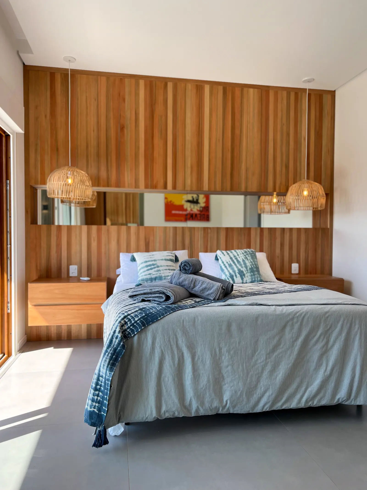

Feita para viver Garopaba.
Uma casa pensada para viver com calma, conforto e aquela sensação de estar exatamente onde você gostaria de estar. A apenas 50 metros do mar, cada estação tem seu encanto.
“Pessoas felizes passam por aqui, para descansar e aproveitar a calmaria a poucos passos do mar.”
Conheça cada ambiente.
Detalhes da estadia.
Um lugar para viver em qualquer época do ano.
No inverno boas ondas para surfar, dias tranquilos e presença especial das baleias-francas na orla em frente a casa.
No verão o cenário muda, calor, praia cheia e a tranquilidade de um bairro familiar, um dos diferenciais da nossa região.
Nos finais de semana, logo pela manhã é possível acompanhar de perto uma tradição que faz parte da vida de Garopaba, os pescadores chegando com suas canoas trazendo os peixes.
Silêncio quando você precisa desacelerar.
As esquadrias da casa são da Weiku e foram escolhidas pensando também no conforto durante a estadia. Quando fechadas, proporcionam excelente isolamento acústico, ajudando a reduzir a percepção dos sons externos e deixando os ambientes mais tranquilos para descansar.
A cozinha também conta com lava-louças, para deixar os momentos depois das refeições ainda mais tranquilos.
Uma passarela que também faz parte da experiência.
Entre os quartos, a casa possui uma passarela que conecta os ambientes de forma leve e integrada. Mais do que uma circulação, ela foi pensada como parte da própria arquitetura da casa.
A solução permite que a claraboia leve iluminação natural para dentro da casa, criando ambientes mais agradáveis durante o dia e contribuindo também para o conforto térmico.
A churrasqueira faz parte da convivência.
Integrada à cozinha e conectada ao espaço térreo da casa, a churrasqueira foi pensada para que preparar uma refeição também faça parte da experiência. Enquanto alguns cuidam da comida, outros podem estar na cozinha, à mesa ou simplesmente aproveitando o ambiente.
Tudo pronto para um dia de praia.
A casa disponibiliza 5 cadeiras de praia, guarda-sol, carrinho de praia e 2 pranchas de body surf para as crianças.